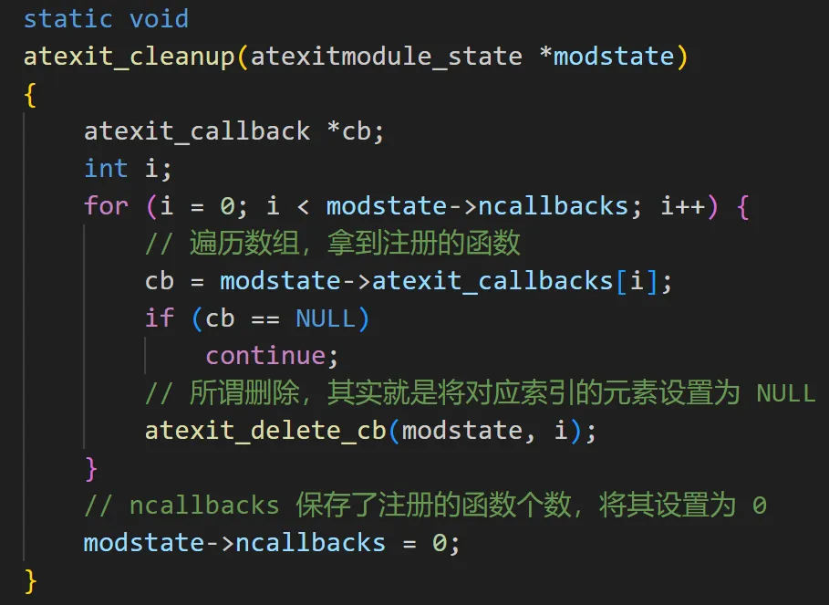

在 Go 里面可以通过 defer 语句让函数在结束时执行预定义好的一些操作，举个例子。
package main
import "fmt"
func main() {
defer fmt.Println("高老师总能分享出好东西")
fmt.Println("执行结束")
/*
执行结束
高老师总能分享出好东西
*/
}
这个功能非常方便，比如打开文件之后可以执行 defer fp.Close()，这样函数结束时会自动关闭文件句柄。那么在 Python 里面可不可以实现类似的功能呢？本次来聊一聊 atexit 模块，它能帮我们实现类似的效果。
import atexit
def exit_func(words):
print(words)
# 将函数注册进去
atexit.register(exit_func, "高老师总能分享出好东西")
print("Hello")
print("World")
"""
Hello
World
高老师总能分享出好东西
"""
通过 atexit.register 将函数注册进去之后，会在程序结束之前执行，当然也可以同时注册多个。
import atexit
def exit_func(words):
print(words)
# 将函数注册进去
atexit.register(exit_func, "高老师总能分享出好东西")
atexit.register(exit_func, "S 老师今年 18，单身带俩娃")
atexit.register(exit_func, "只因^(*￣(oo)￣)^只因大(出海版)")
print("Hello")
print("World")
"""
Hello
World
只因^(*￣(oo)￣)^只因大(出海版)
S 老师今年 18，单身带俩娃
高老师总能分享出好东西
"""
如果同时注册了多个函数，那么会按照先入后出的顺序执行。非常简单，其实 atexit 模块就是将我们注册的函数保存在了一个数组中，程序结束的时候，从后往前依次执行。

既然可以注册函数，那么也可以取消注册。
import atexit
def exit_func1(words):
print(words)
def exit_func2(words):
print(words)
atexit.register(exit_func1, "高老师总能分享出好东西")
atexit.register(exit_func1, "S 老师今年 18，单身带俩娃")
atexit.register(exit_func2, "只因^(*￣(oo)￣)^只因大(出海版)")
# 取消注册，所有注册的 exit_func1 函数都会被删除
atexit.unregister(exit_func1)
"""
只因^(*￣(oo)￣)^只因大(出海版)
"""
而它的逻辑也很简单，就是遍历数组，如果和指定的函数相等，那么就删掉。我们看一下源代码。

如果你想将注册的函数全部取消掉，那么也可以调用 _clear() 函数。
import atexit
def exit_func1(words):
print(words)
def exit_func2(words):
print(words)
atexit.register(exit_func1, "高老师总能分享出好东西")
atexit.register(exit_func1, "S 老师今年 18，单身带俩娃")
atexit.register(exit_func2, "只因^(*￣(oo)￣)^只因大(出海版)")
atexit._clear()
此时程序不会有任何输出，因为注册的函数全部被清空了，同样可以看一下它的源代码。

最后就是函数的调用时机，我们注册的函数在程序结束时才会调用，可不可以让它们在任意时刻调用呢？
import atexit
def exit_func1(words):
print(words)
def exit_func2(words):
print(words)
atexit.register(exit_func1, "AAA")
atexit.register(exit_func1, "BBB")
# 调用注册的函数，调用之后函数会被删除
atexit._run_exitfuncs()
print("++++++++++++++++")
atexit.register(exit_func2, "CCC")
atexit._run_exitfuncs()
print("----------------")
"""
BBB
AAA
++++++++++++++++
CCC
----------------
"""
输出结果表明，一旦调用了 _run_exitfuncs，所有注册的函数会立即被调用。我们看一下源代码。
以上就是 atexit 模块的用法，那我们如何基于它实现 Golang 的 defer 呢？
from typing import Callable
import atexit
def defer(func: Callable, *args, **kwargs):
atexit.register(func, *args, **kwargs)
def get_file_content(file_path):
fp = open(file_path, encoding="utf-8")
defer(fp.close) # 注册函数
content = fp.read()
# do something
...
atexit._run_exitfuncs() # 触发注册函数执行
get_file_content("config.py")
不过这个例子明显有点刻意了，因为必须要在函数的结尾调用 atexit._run_exitfuncs，而之所以要实现 Go 的 defer，就是为了避免遗忘某些逻辑。
如果每次都要在函数结尾调用 atexit._run_exitfuncs，那还不如不用，于是我们可以考虑使用装饰器。
from typing import Callable
from functools import wraps
import atexit
def defer(func: Callable, *args, **kwargs):
atexit.register(func, *args, **kwargs)
# 给函数赋予 defer 功能
def enable_defer(func):
@wraps(func)
def inner(*args, **kwargs):
ret = func(*args, **kwargs)
atexit._run_exitfuncs()
return ret
return inner
@enable_defer # 通过装饰器，让函数支持 defer 功能
def get_file_content(file_path):
fp = open(file_path, encoding="utf-8")
# 注册函数
defer(fp.close)
defer(print, "get_file_content 函数实现了 defer 功能")
content = fp.read()
print("函数执行结束")
get_file_content("config.py")
print("程序结束")
"""
函数执行结束
get_file_content 函数实现了 defer 功能
程序结束
"""
输出结果表明，在函数结束后，通过 defer 注册的函数执行了。
以上就是用 Python 实现 Go 的 defer，不过在工作中还是不建议这么做，没啥必要，这里只是想分享一下 atexit 模块。